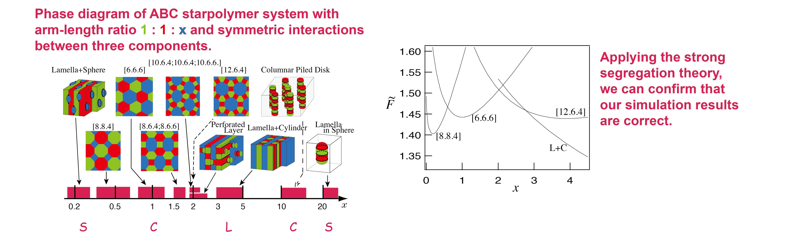

Tohru Gemma, Akira Hatano and Tomonari Dotera
Macromolecules 35 (2002), pp.3225-3237
The microphase-separated morphology of ABC three-arm star-shaped copolymers with arm-length ratio 1:1:x is investigated by a recently proposed simulation method, the diagonal bond method. Five kinds of two-dimensional (cylindrical) phases, three kinds of lamellar-type phases and two kinds of continuous matrix phases are discovered. The phase diagram is presented: The progression of the morphologies as a function of x is the following: lamella+sphere; five polygonal cylinders, [8.8.4], [6.6.6], [8.6.4; 8.6.6], [10.6.4; 10.6.4; 10.6.6], [12.6.4]; perforated layer; lamella+cylinder; columnar piled disk; lamella-in-sphere. Two remarkable features of ABC starpolymer systems are found: first, in all phases junction point monomers gather on lines where three interfaces meet, and second, the section of the cylindrical phase becomes the tessellation of even-numbered polygons. The free energy of the system is also calculated in the strong segregation limit for four kinds of simple phases, and the results are consistent with the simulations.
ABC star polymer, terpolymer, block copolymer, Archimedian tiling